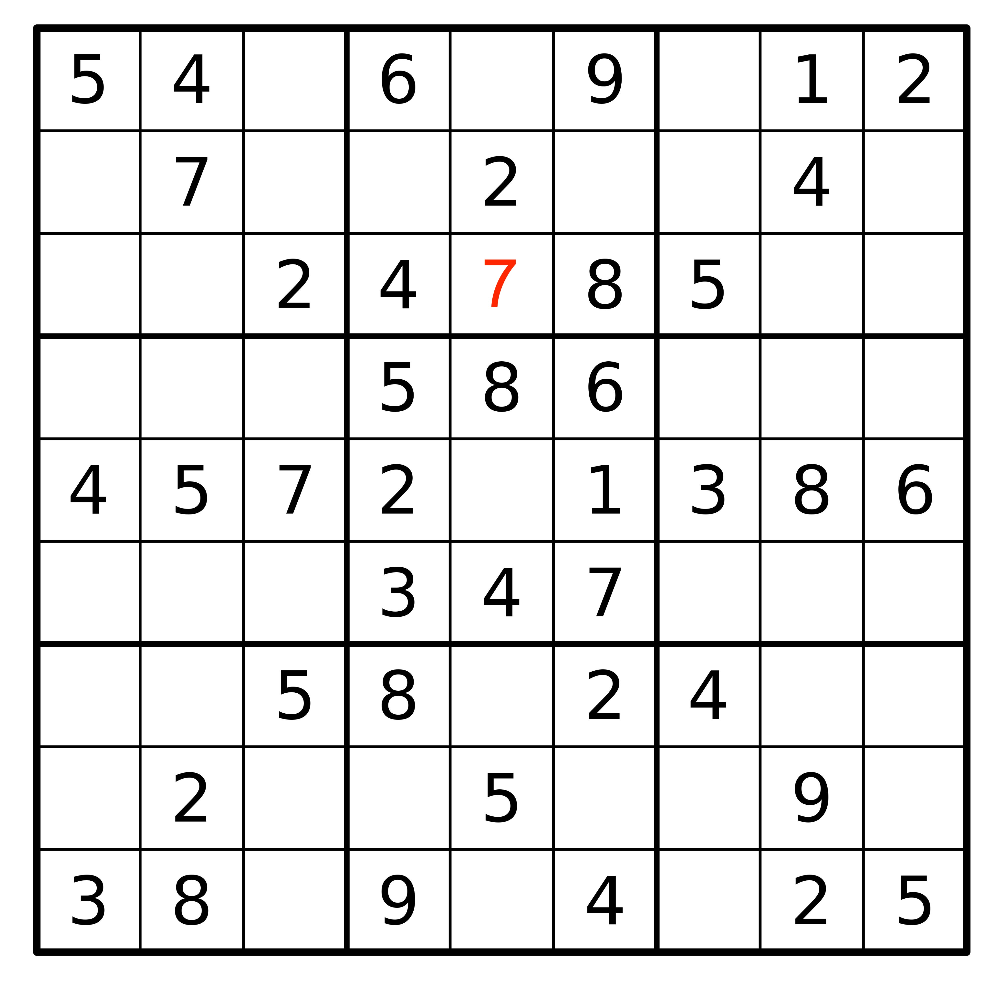
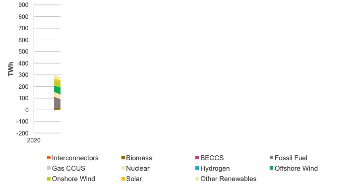
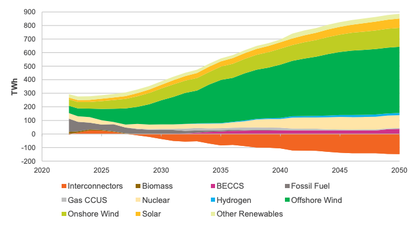
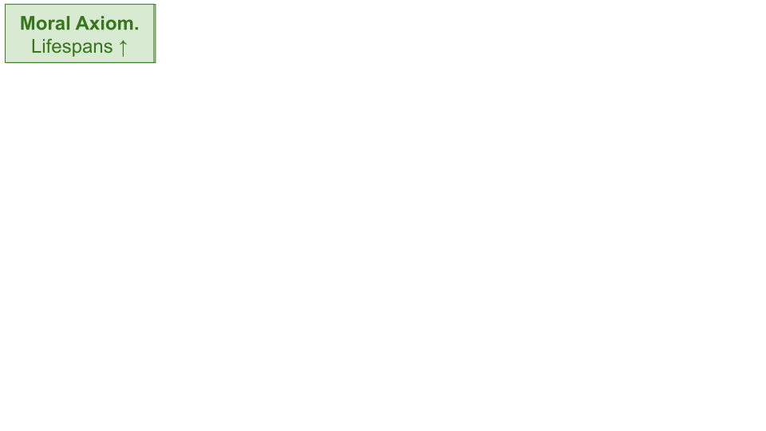
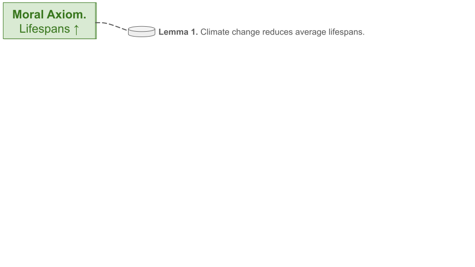
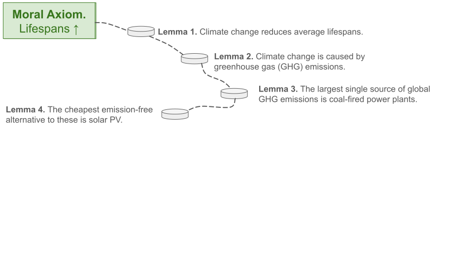
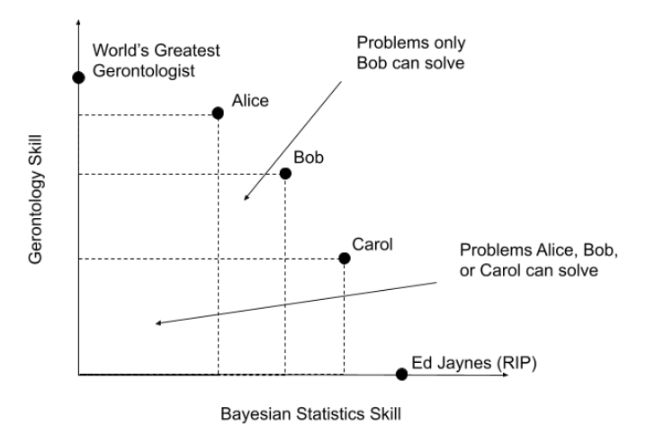
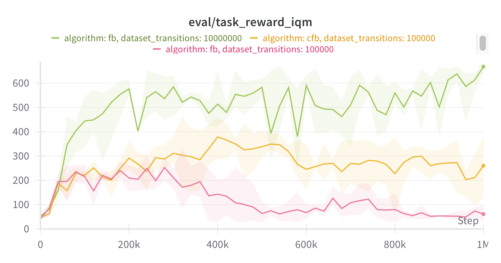

The Problem Problem
Choosing useful research problems
Agenda
- What are problems?
- Identifying problems
- Moral axioms, lemmas, and propositions
- Being the pareto best in the world
- Checking the problem
- Balancing feasiblility and usefulness
- Baselines and oracles
- Takeaways
What are problems?
What are problems?
“A problem is a situation in which we experience conflicting ideas.”
David Deutsch
Let’s start with a definition, here’s the best I’ve found for what constitutes a problem. David Deautsch says a problem is a situation in which we experience conflicting ideas. In other words we have two or more explanations about how we might proceed, and its not initially clear how to choose between them. This is general; let’s look at what this means in practice.
Open problems: this sudoku

Here’s a problem: this unfinished sudoku. We need a ‘7’ to go somewhere inside the top-middle box, but as it stands, the 7 could go in multiple places.
Open problems: this sudoku
Idea (a)

Idea (b)

We have multiple ideas about where the 7 could go. A first idea may be to suggest it goes in the top-middle cell in the box. A second idea may be to suggest it goes in the bottom-middle cell in the box. As it stands, we haven’t constrained the problem enough to rule out one of these options.
Open problems: the future UK electricity mix

Here’s another open problem: what the future UK electricity mix should look like to balance, emissions, cost, reliability and security. This cross-section of the chart summarises the current make-up of the grid:
Open problems: the future UK electricity mix
Idea (a)

Idea (b)

Here are two options from the National Grid’s Future Energy Scenarios report about what it could look like. Idea a) decarbonises slower, and then makes up for it with more CCS in future decade. Idea b) decarbonises quicker and requires less future CCS, but is more costly. Of course, there are many more ways in which we could conifgure the future grid mix, and it not clear exactly how we should proceed.
Open problems: a theory of everything

Here’s one more: a theory of everything; a unification of the four fundamental forces of physics: electromagnetism, the strong force, the weak force, and gravity. We have The Standard Model that predicts the behaviour of the first three; and general relativity for predicting gravitational effects.
Open problems: a theory of everything
Idea (a)

Idea (b)

An resolution could be string theory (idea (a)), anothe could be something else.
As these examples imply, solutions to some problems are more important than others. If you solve the sudoku that, at best, benefits you; if you come up with a theory of everything that changes humanity’s trajectory.
Some solutions are better than others
- To solve a problem we incur a cost in exchange for some gain
- Solutions where cost >= gain are zero-sum games
- Solutions where gain > cost are positive-sum games
All that is to say: some solutions are better than others. Let’s think about that more precisely. To solve a problem we incur a cost in exchange for some gain. Solutions where costs outweigh the gains are zero-sum games. Solutions where gains outweight the costs are positive-sum games. Let’s look at some examples.
Zero-sum games
- Chess
- War
- PhD?
Okay some zero-sum games. Chess is one. In chess, every gain in the position of Player A is a loss in the position of Player B. And in general, a win for me delivers a proportional loss for you. Similarly, war is a zero-sum game. Unfortunately the losses incurred by both sides of a war (be it financial or human) far outstrip the perceived or real gains the winner realises. Finally, doing a PhD?
Positive-sum games
- Trade
- Innovation/techology
- Environmental conservation
Okay some positive-sum games. Trade is the obvious one. For many reasons countries produce goods at different costs from one another. Take, for example, the production of citrus fruits like oranges. It’s cheaper to produce oranges in Spain than it is in the UK because the weather there is naturally more amendable to it than here. Equally its cheaper to produce potatatoes in the UK than in Spain for similar reasons. So if we trade potatoes to Spain in exchange for oranges then both countries get these items for less than we would have if we had produced them ourselves.
Innovation is a positive-sum game. When an engine is made X% more fuel efficient, that reduces the fuel bill of everyone who owns that engine every time the engine is used in the future. When Apple issue a software update that fixes a bug on iPhones, this benefits everyone who owns an iphone.
A final positive-sum game is environmental conservation. Mitigating climate change benefits billions of future humans.
The goal is to find problems where the solutions are maximally positive-sum
That leads to the first key takeaway of this discussion: the goal should always be to find problems with solutions that maximally positive sum i.e. their returns to society far outweight the cost of solving them. Which leads us to the meat of this discussion.
Identifying problems
Okay let’s talk about how to identify some of these problems. I’ll talk about two methods for doing problem identification.
Moral axioms, lemmas and propositions
- Moral axioms. Establish a set of (moral) beliefs that you feel cannot be challenged. E.g.
- All else being equal, increasing one’s happiness is good.
- All else being equal, increasing the average lifespan is good.
- All else being equal, increasing our understanding of the universe is good.
- Lemmas. Published scientific truths you use as stepping stones to connect you to your axiom. E.g.
- Happiness is proportional to wealth until a saturation level
- Climate change reduces average lifespans
- Happiness is proportional to wealth until a saturation level
- Propositions. A problem that, if solved, provides another connection to your axiom.
The first uses what I call moral axioms, lemmas and propositions. I’m stealing, a slightly butchering, terms from mathematics here. An axiom in mathematics is a statement that does not need to be proven, it is assumed to be true without justification. A lemma, is a previously established proof that follows from the axiom that is used a stepping stone to get you to your proposition, which is some mathematical conjecture that you are about to prove to be true.
Here we going to start with a moral axiom, which is a belief about the world that you feel cannot be challenged. Some examples include, “increasing one’s happiness is good”, “increasing the average lifespan is good”, “understanding the universe is good”. Then, we establish a serious of lemmas, which are published scientific truths you use as stepping stones to connect you to your axiom. Each lemma should try to get you as close as possible to maximising the axiom, or resolving the previous lemma. Eventually if you keep doing this you will run out of lemmas and you will arrive at a problem where there are conflicting ideas about which stepping stone comes next. You then make a proposition, which is your what you believe to be the best solution to the problem. And you prove your proposition with a paper.
Let’s look at an example.
Moral axioms, lemmas and propositions

Moral axioms, lemmas and propositions

Moral axioms, lemmas and propositions

Moral axioms, lemmas and propositions

Moral axioms, lemmas and propositions

Moral axioms, lemmas and propositions

Moral axioms, lemmas and propositions

Moral axioms, lemmas and propositions

Moral axioms, lemmas and propositions

Moral axioms, lemmas and propositions

Once you prove a proposition, the effect chases all the way back up the tree and nudges your moral axiom.
Moral axioms, lemmas and propositions: actions
- Think deeply about your moral axioms.
- Read widely to establish the chain of science that maximally affects your moral axiom.
- Establish where the chain of science ends, and propose a way for extending the chain i.e. a problem to solve.
So what are the action items from this framework.
Being the (pareto) best in the world
- If you are the best in the world at something, you are uniquely positioned to see its problems and solve them.
- Some examples:
- Usain Bolt & sprinting
- Beyonce & singing
- Refficiency & sankey diagrams
- It is hard to be the best in the world at something.
- But, it is easy to be the best in the world at several things simultaneously.
Okay here’s a second method for thinking about problems. It’s called being the pareto best in the world, and the core idea comes from this guy John Wentsworth’s blog post.
Being the (pareto) best in the world

Here’s a diagram that plots researchers w.r.t. their statistical skill and their gerantology knowledge (the study of ageing). If you sit at the far end of either access you are the best in the world at that skill–so we have this guy Ed Jaynes as the GOAT bayesian statistician, and at the top of the y-axis is the GOAT gerantologist. And then we have Alice, Bob, and Carol are all some combination of the two. Alice is better at gerontology, and less good at stats, and bob is good at stats and less good at gerantology. Crucially though, they each have a unique position on the chart, and that creates areas that require the set of skills only one them has. The better you are at a combined set of skills, the more problems are accessible and solvable by you, and you alone. Another way to think about this is that you have a finite set of tokens you can spend on improving yourself (in practice this is like time). Let’s say you have 100 tokens to spend on yourself, the question is what skills should you exchange your tokens for to maximally increase the number of problems that are available to you alone. If you are already really good at gerantology, then a small amount of tokens dedicated to bayesian stats could make a hugh new set of problems accessible to you.
Being the (pareto) best in the world: actions
- Establish what you are pareto best at today
- Use this knowledge to think about the problems that are uniquely accessible to you
- Think about how you can spend your learning tokens to increase the space of problems that are uniquely accessible to you
Checking the problem
Balancing feasiblility and usefulness

Alon, Uri. “How to choose a good scientific problem.” Molecular cell 35.6 (2009): 726-728.
Baselines and oracles: is your problem really a problem?
- Sometimes you can trick yourself into thinking a problem exists when it doesn’t. A way to ensure this doesn’t happen is to use Baselines and Oracles
- A Baseline is the current best guess at a solution to the problem
- An Oracle is a solution to the problem that relaxes some assumptions/constraints
- For a problem to exist: there must be a gap between the baseline and the oracle
Nachum, Ofir. “Baselines and Oracles.” (2022)
Baselines and oracles: is your problem really a problem?
| Problem | Baseline | Oracle |
|---|---|---|
| Solar PV conversion efficiency ☀️ | 31.25% (Perovskite Tandem Cells) | 33.7% (Shockley-Queisser Limit) |
| Wind conversion efficiency üí® | ~30% (GE Haliade-X) | 59.3% (Betz Limit) |
| Building intelligent machines ü§ñ | GPT-4 | Humans |
| Unifying the four fundamental forces üîé | The Standard Model | The Universe |
Nachum, Ofir. “Baselines and Oracles.” (2022)
Shockley-queisser limit is the max proportion of energy that can be extracted from a photon with a p-n junction solar cell. Betz limit is the theoretical maximum proportion of energy that can be extracting from a column of fluid.
Baselines and oracles: is your problem really a problem?

Baselines and oracles: is your problem really a problem?

Baselines and oracles: is your problem really a problem?

Baselines and oracles: is your problem really a problem?

Baselines and oracles: is your problem really a problem?
A theory:
- Progress in the hard sciences is fast because physics provides oracles
- Progress in the social sciences is slow because defining oracles is difficult (sometimes impossible)
Checking the problem: actions
- Think about the problems position on the useful/feasible axis
- Establish a baseline and an oracle for your problem
- If there is no gap between the two, your problem doesn’t exist
- The bigger the gap between the two, the better
Final Takeaways
- We want to work on problems that are maximally positive-sum i.e. their returns to society are much higher than the costs
- Identifying these problems is hard. Some options:
- Moral axioms, lemmas and propositions
- Being the (pareto) best in the world
- Once you’ve selected a problem to work on, make sure:
- It is both feasible and useful
- The problem exists (using baselines and oracles)
Closing remarks
Progress is incremental
- “Quantum leaps” do not happen1
- ChatGPT, (arguably) the most surprising technological advance of the last 15 years, was a combination small advances made over many years
- Don’t be intimidated by the “amount of progress” being made elsewhere
Be courageous
“One of the characteristics of successful scientists is having courage. Once you get your courage up and believe that you can do important problems, then you can. If you think you can’t, almost surely you are not going to.”
Richard Hamming, You and Your Research (1986)
Thanks!
Footnotes
at least not in the 21st century↩︎